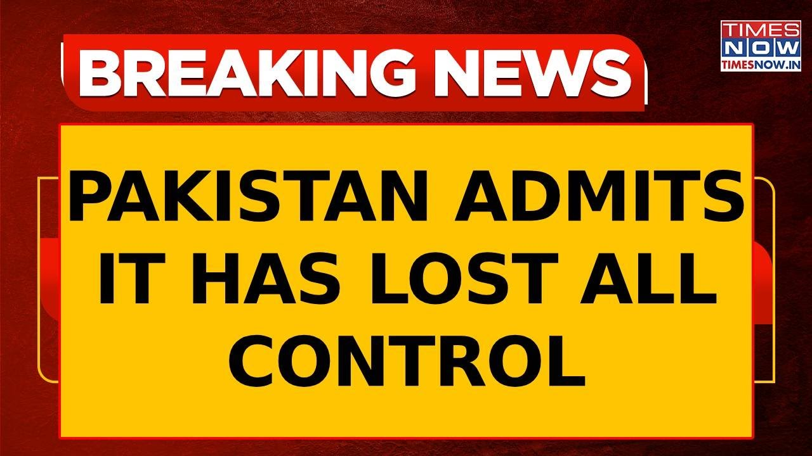

来B站一起耍【Global每日英语简报】
【巴基斯坦失去对俾路支省的控制，前总理沙希德·阿巴西承认 | 辛杜尔行动】
Summary: Former Pakistan PM Shahid Abbasi warns of deteriorating security in Balochistan, admitting Pakistan is losing control, with officials unable to move without escorts amid daily attacks on the military.
摘要： 巴基斯坦前总理沙希德·阿巴西警告俾路支省安全局势恶化，承认巴基斯坦正在失去控制，官员们无法在没有护送的情况下行动，军方每天遭受袭击。

⏱️ Estimated Reading Time: 6 min
Updates coming in.
最新消息传来。
Uh Pakistan's former prime minister Shahed Dasi has raised an alarm over the worsening security situation in Balojasthan stating that the Pakistani side is rapidly losing control of Baloistan.
巴基斯坦前总理沙希德·阿巴西对俾路支省恶化的安全局势发出警告，称巴基斯坦方面正在迅速失去对该地区的控制。
Speaking in a recent interview, Abbasi in fact described an uh the situation and said that it's a situation of fear and uncertainty across the province.
在最近的一次采访中，阿巴西描述了这一局势，并表示全省处于恐惧和不确定的状态。
He in fact added that several senior government officials and ministers are also unable to move without any security escorts.
他还补充说，多名高级政府官员和部长也无法在没有安全护送的情况下行动。
Uh Praep big update there coming in with Pakistan admitting and this is a candid admission that has come in with the former prime minister saying that Pakistan is losing control of Balojasthan.
巴基斯坦承认了这一事实，前总理直言不讳地表示巴基斯坦正在失去对俾路支省的控制。
No doubt about that.
这一点毫无疑问。
In fact if you look at the situation during the last few months it clearly indicates that Pakistan army has lost control.
事实上，过去几个月的情况清楚地表明巴基斯坦军队已经失去控制。
They are hardly able to move from one area not to talk about the ministers and the people from administration because there is hardly any day when there is no attack on Pakistan army.
他们几乎无法从一个地区转移到另一个地区，更不用说部长和行政人员了，因为几乎没有一天巴基斯坦军队不遭受袭击。
We we have seen that how they were caught napping when Balo depression army people were able to hijack train and many of them had been taken as hostage also.
我们看到他们在俾路支解放军人员劫持火车时措手不及，许多人还被扣为人质。
So that was a very difficult situation for Pakistan army.
这对巴基斯坦军队来说是一个非常困难的局面。
So it clearly indicates that aim the Pakistani general is losing control.
这清楚地表明巴基斯坦将军正在失去控制。
It's getting very difficult for him to keep flock together.
他越来越难以维持部队的凝聚力。
It's not only talk about the Baljasthan the situation is almost similar in Kyber Paktuma area also and for the last 3 days 4 days we have seen that there had been several attacks on Pakistan army they are losing their men each and every day so even people within the Pakistan army they're asking one question whose war we are fighting against whom we are fighting because when you are fighting because they say as per the Pakistan army they had been told that those who are non-Muslims they are infidels and those who are Muslims they are fidels so that mean if we are fighting against Allah's army so they're also are fighting for Allah.
不仅是俾路支省，开伯尔-普赫图赫瓦地区的情况也几乎相同，过去三四天我们看到巴基斯坦军队多次遭受袭击，每天都在损失人员，甚至军队内部的人也在问一个问题：我们在为谁而战，对抗谁？因为根据巴基斯坦军队的说法，他们被告知非穆斯林是异教徒，而穆斯林是信徒，这意味着如果我们对抗的是真主的军队，那么他们也是在为真主而战。
So we are fighting against how come we fight against Allah's army.
那么我们怎么能对抗真主的军队呢？
So those are the questions that are right now being asked by the lower rank officials in the Pakistan army.
这些正是巴基斯坦军队下级官员现在提出的问题。
It is because of that reason.
正是因为这个原因。
Many of them have already deserted.
许多人已经开小差。
Some of them have decided to join the other side.
有些人决定加入另一方。
They are fighting from on their behalf rather than fighting for the Pakistan army of Pakistan.
他们代表自己而战，而不是为巴基斯坦军队而战。
That's one of the reason that Pakistan is losing grip.
这是巴基斯坦失去控制的原因之一。
Reason is obvious because if we talk about the Pakistan army, it is being seen as an occupational army that is involved in the persecution because there had been several cases of disappearances.
原因很明显，因为巴基斯坦军队被视为一支占领军，参与迫害，已经发生了多起失踪案件。
Often people came out on street, they are protesting against Pakistan armies.
人们经常走上街头抗议巴基斯坦军队。
They they say after few days their bodies are recovered.
几天后他们的尸体被发现。
The same had been the situation with the women also the women are being raped.
妇女也面临同样的情况，她们遭到强奸。
So they they are totally against it.
因此她们完全反对。
There's a lot of anger.
民众非常愤怒。
So when the people are angry with army in such a situation it's not that easy for army to operate.
在这种情况下，当民众对军队愤怒时，军队行动并不容易。
Look at the situation on Indian side.
看看印度的情况。
Everybody stands firm with the army because the army had been able to garner that kind of a respect because the way they had been helping people in all sort of difficulties but here is an armed forces those who are leading luxurious lifestyle the generals are like more feudal lords but uh they hardly care about even the middle rank officials also that's reason that there is no coordination there's no synergy between the forces and that's one of the reason that setback after setback Pakistan army is receiving and it's because of that it has almost lost group over the balam it appears that any time the things can really implode.
每个人都坚定支持军队，因为军队赢得了这种尊重，因为他们帮助人们应对各种困难，而这里的武装部队高层过着奢侈的生活，将军们更像是封建领主，但他们甚至不关心中级官员，这就是部队之间缺乏协调和协同的原因之一，也是巴基斯坦军队接连遭受挫折的原因，几乎失去了对俾路支省的控制，局势随时可能崩溃。
Absolutely.
确实如此。